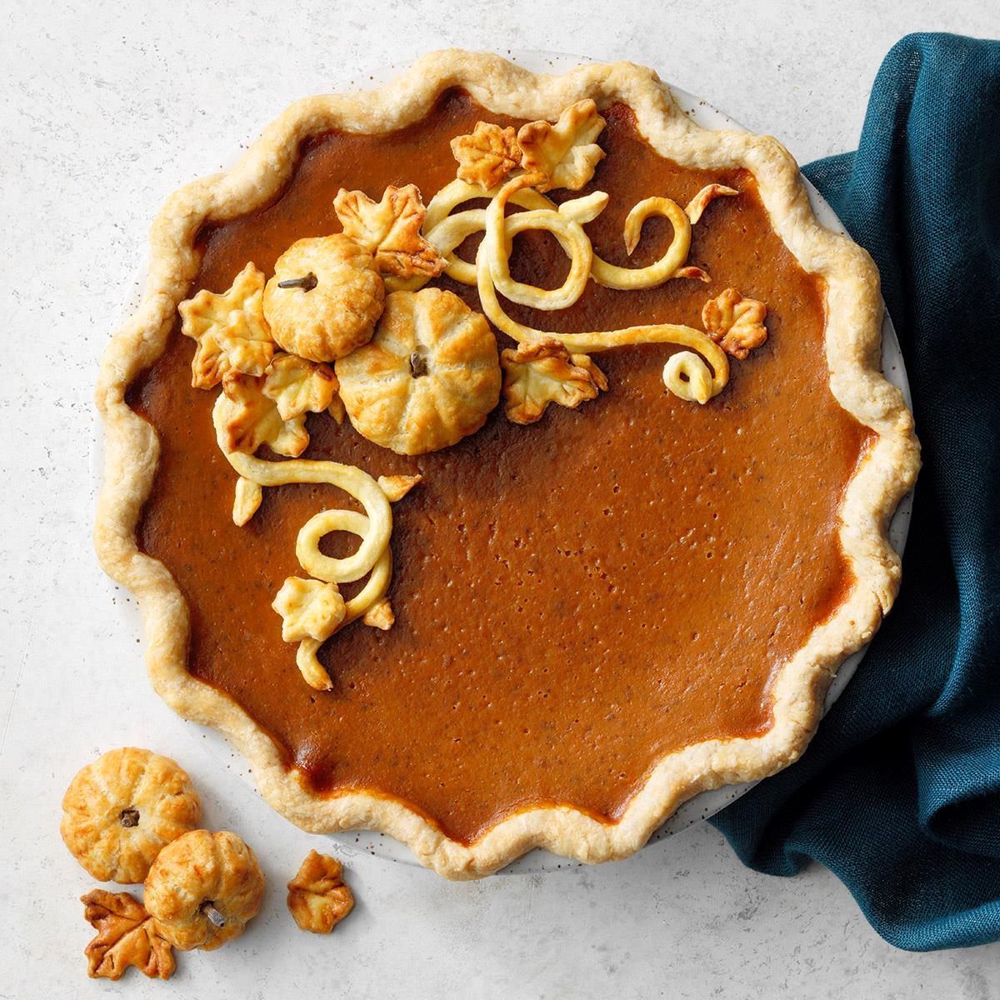

Pumpkin Pie

Description
This delicious pumpkin pie recipe is the only one you'll ever need.
With it's flaky crust and creamy pumpkin filling it is sure to be an
enjoyable dessert any time of the year.
Ingredients
Crust:
- 2 cups all-purpose flour
- 3/4 teaspoon salt
- 2/3 cup shortening
- 4 to 6 tablespoons cold water
Filling:
- 6 large eggs, room temperature
- 1 can (29 ounces) solid-pack pumpkin
- 2 cups packed brown sugar
- 2 teaspoons ground cinnamon
- 1 teaspoon salt
- 1/2 teaspoon each ground cloves, nutmeg, and ginger
- 2 cups evaporated millk
Steps
- Preheat oven to 450°. In a large bowl, combine flour and
salt; cut in shortening until crumbly. Gradually add
water,
tossing with a fork until dough forms a ball. Divide dough
in half. On a floured surface,roll out each portion to fit a
9-in. pie plate. Place crust in plates; trim crust to 1/2 in.
beyond edge of plate. Flute edges.
- For filling, beat eggs in a large bowl. Add the pumpkin,
brown sugar, cinnamon, salt, cloves, nutmeg and
ginger;
beat just until combined. Gradually stir in milk.
Pour into
crusts.
- Bake for 10 minutes. Reduce oven setting to 350°; bake
until a knife inserted in the center comes out clean,
40-45
minutes longer. Cool pies on wire racks for 1 hour.
Refrigerate at least 3 hours before serving. Refrigerate
leftovers.